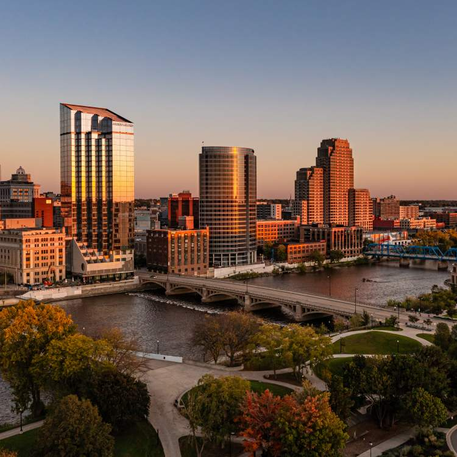

Lansing, the vibrant capital of Michigan, is nestled in the south-central region of the state. With a current population of approximately 117,000 residents, Lansing is considered an urban city, teeming with cultural and economic activity. It was officially incorporated as a city in 1859 and holds a unique place in Michigan's history. Lansing is the hub of state government activities, housing the Michigan State Capitol, which was completed in 1878. In terms of income, Lansing's average income level is $26,103. Which is almost on par with the rest of the state. The city's dynamic landscape offers an array of cultural attractions, educational institutions, and a thriving downtown area, making it a captivating place for both residents and visitors to explore.
Detroit is the largest city in Michigan, and is located in the southeastern region of the state. With a population of over 620,000 residents, Detroit is classified as an urban center. It was incorporated as a city in 1815, making it one of Michigan's oldest and most historic cities. Known as the 'Motor City,' Detroit has also played a significant role in the development of the automotive industry and continues to be a center for innovation and culture. In terms of income, Detroit's average income level at $20,961 is often lower compared to the state's average, this reflects both its challenges and resilience. The city boasts a rich cultural heritage, with a thriving arts scene, iconic landmarks like the Renaissance Center, and a vibrant downtown area.

Grand Rapids, positioned in the southwest region of Michigan, stands as a lively urban center with a population of roughly 200,000 residents. This historic city received its incorporation in 1850, underscoring its enduring presence in Michigan's story. Grand Rapids generally boasts an average income level of $26,756 and that is in line with the state average. While Grand Rapids is recognized for its vibrant arts, music scenes and celebrated craft beer culture, the city offers a diverse range of cultural experiences. Grand Rapids' green parks and bustling downtown combine to create a distinctive atmosphere, making it a destination for both residents and those seeking to explore its dynamic offerings.
